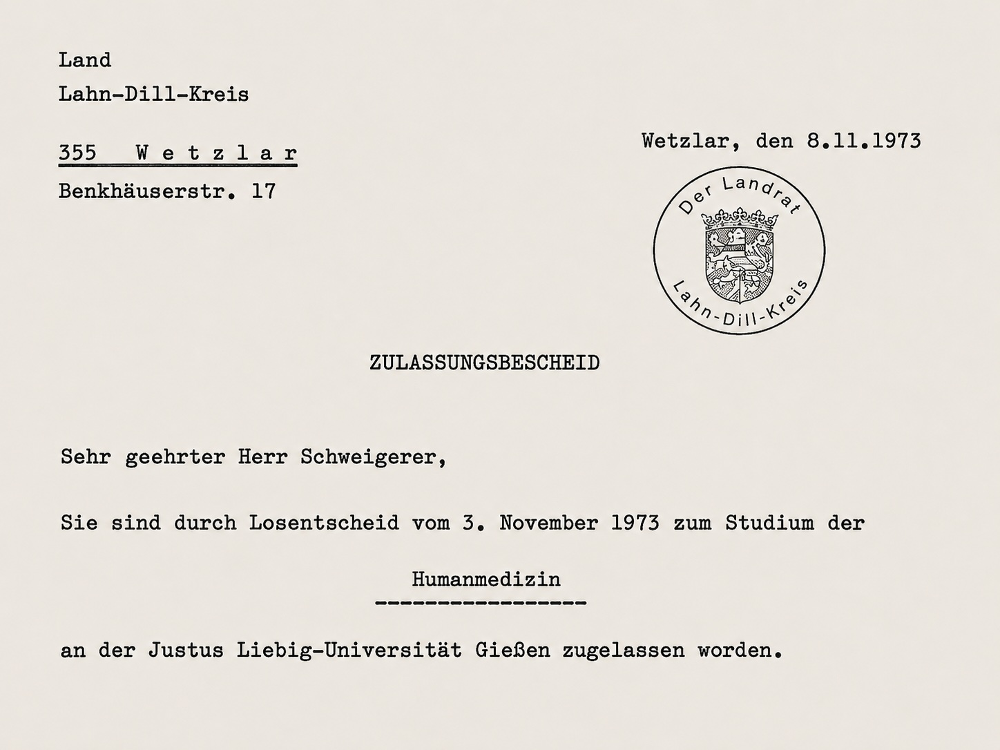

1973
Ich hatte mein Abitur bestanden. Und nun wurden alle von unserem Klassenlehrer befragt, welche berufliche Laufbahn sie anstrebten. Mit meiner Durchschnittsnote von 3,2 – aufgrund meiner damaligen Faulheit – kamen für mich nicht gerade viele Berufe infrage. Zumindest nicht die mit einem Numerus Clausus. Und das waren praktisch alle medizinischen Berufe. Ich wollte das schlicht ignorieren und sagte auf die Frage, was ich denn werden wolle: „Doc Holliday“.
Ich wusste, dass Doc Holliday ein Zahnarzt und Revolverheld im Wilden Westen war, interpretierte die Bezeichnung für mich aber als geniale Kombination aus „Arzt“ und „Ferien machen“. Also genau richtig für mich: ein Arzt, der überwiegend Ferien macht. Auf meine Antwort folgte schallendes Gelächter der gesamten Abiturklasse. Niemand glaubte daran, dass das mit mir und dem Doc etwas werden könnte. Ich übrigens auch nicht.
Aber das Glück kam mir zu Hilfe. Ich war zuhause in Morbach, als Manni mich anrief. Er war bereits in Gießen und machte eine Ausbildung zum medizinischen Dokumentationsassistenten. Er hatte in der „Gießener Allgemeinen“ gelesen, dass es im Nachrückverfahren Humanmedizin noch Studienplätze gebe, die mittels Losverfahren vergeben würden. Ob ich mich nicht bewerben wolle?
Ich dachte: Na klar, ich kann ja nichts verlieren. Und rechnete mit nichts. Aber das Glück meinte es gut mit mir. Zum ersten Mal hatte ich etwas gewonnen. Und dann war es gleich ein Volltreffer – wie ein Sechser im Lotto.
Und dann ging’s nach Gießen. Ich fand mich schnell in Mannis Clique ein. Alles Kerle wie wir. Ziemlich viel Unsinn im Kopf und bei jeder Feier mit dabei. Aber für mich wurde es jetzt richtig ernst. Da waren all die vermeintlichen Einserkandidaten, die nun mit mir Medizin studierten. Wie sollte ich gegen die bestehen? dachte ich damals.
Da gab es nur eins: Ich musste zum ersten Mal in meinem Leben so richtig büffeln. Und das habe ich dann getan. Mein abschließendes Staatsexamen bestand ich schließlich mit Auszeichnung.

Die Bilder zeigen mein Abiturzeugnis und den Losentscheid, der mir den Studienplatz ermöglichte.